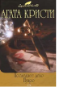

В этот том вошли два последних романа Агаты Кристи о великом сыщике Эркюле Пуаро. В романе "Слоны умеют помнить" великий сыщик ведет бесконечный спор о преступлении с хорошо известной читателям писательницей Ариадной Оливер и в процессе спора выявляет истину. Действие романа "Занавес. Последнее дело Пуаро" разворачивается в Стайлзе - том самом месте, где происходили события самого первого романа Агаты Кристи о маленьком бельгийце "Загадочное происшествие в Стайлзе". Круг замкнулся!